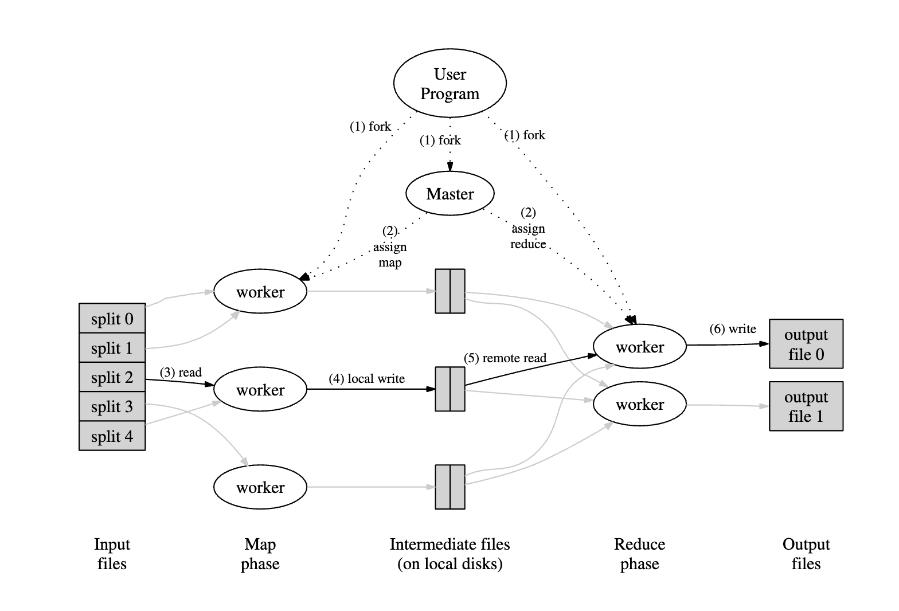

- MapReduce is a distributed computing framework for processing large datasets.
- A map function processes a key/value input and outputs intermediate key/value pairs.
- A reduce function merges all intermediate values associated with the same intermediate key.
Programming Model
- The user provides the Map and Reduce functions.
- The MapReduce library groups all intermediate values associated with the same intermediate key.
map: (k1, v1) --> list(k2, v2)reduce: (k2, list(v2)) -> list(v2)- The input keys and values are in a different domain from the output keys and values.
- The intermediate key/value pairs are in the same domain as the output keys and values.
Word Counting With MapReduce
The below pseudo-code block shows how the MapReduce framework can be used to count the number of words in various documents.
# The key is the doc_name.
# The value is the doc_contents.
# The intermediate result is (word, 1).
# The map function is run on multiple documents.
# We will get a large number of (word, 1) pairs.
Map(String doc_name, String doc_contents):
for each word in doc_contents:
EmitIntermediate(w, "1")
# At this point, the MapReduce framework will aggregate
# all pairs with the same key. For example, the Reduce
# will run on the following inputs -
# (w1, [1, 1, ...]), (w2, [1, 1, ...]), (w3, [1, 1, ...])
# The input is going to be (word, [1, 1, ... 1]).
# The output will be count (number of times the word is seen).
Reduce(String word, Iterator counts):
return sum(counts)
# The reduce function will run on every aggregate created
# by the framework, and each run will produce a single number.
# The sum of all the outputs of the reduce functions will give us
# the total number of words in various documents.Implementation
- STEP 1: The MapReduce library splits the input into M splits.
- One of these pieces is called the Master, which assigns work to the other splits (Workers).
- There are M map tasks and R reduce tasks. An idle worker executes either a map or a reduce task.
- STEP 2: A map worker parses key-value pairs from the input and executes the map function.
- The intermediate key value pairs are buffered and periodically written to disk.
- The master can access the disk and send data to idle workers to execute the reduce function.
- STEP 3: The reduced worker uses an RPC to retrieve data from the disk.
- The worker sorts the intermediate key/value pairs to group all instances of the same key together. This is fed to the reduce function.
- The output of the reduce functions is appended to the final output file.
- STEP 4: There will be one output file per reduce task.
- Typically, these files are then sent through another MapReduce operation.
